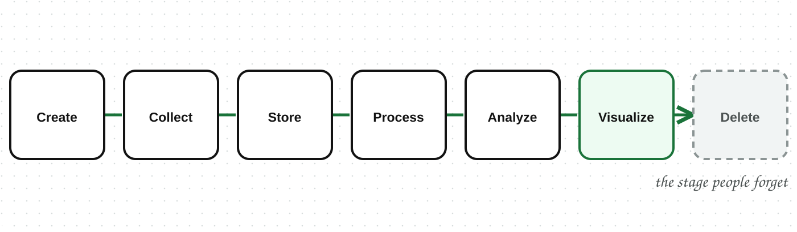
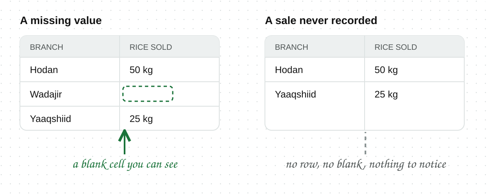

A shop records a sale of rice at $2.50 per kg on a Tuesday morning. Four years later that same record is deleted from a backup nobody has opened since. Between those two moments it was stored, corrected, counted, and drawn on a chart a manager looked at for six seconds. Data has a life, and most of that life happens outside the moment people picture when they say "collecting data".
The data lifecycle is the full path data follows from the moment it is created to the moment it is deleted.

Not every dataset reaches every stage. Plenty of data is created and never collected, and plenty is collected and never looked at again.
Data is created whether or not anyone records it. Every sale in a shop that keeps no records still happened. What separates a fact from a data point is that somebody wrote it down.

A missing value leaves a blank cell you can see. Data you never collected leaves nothing at all, so there is no gap to notice and no cell to question.
To process data is to turn it into the form the next stage needs: correcting errors, handling gaps, and reshaping records into the layout something else expects.
It is the least visible stage and usually the longest. Nobody presents the processing. They present the chart, which is four stages downstream of the payment and looks nothing like it.
Processing covers a wide range, from fixing a badly typed date to reorganizing millions of rows, and each of those is a subject in its own right.
Archiving is moving data out of everyday systems into slower, cheaper storage where it can still be recovered if it is needed.
Deleting is the stage people forget exists. Storage costs money every month, and personal data that is no longer needed can still be lost, leaked, or used for something the person never agreed to.
A record that serves no purpose is safer gone.
A number on a dashboard is five stages away from the thing that happened. Each of those stages is a place where the record could have been corrected, reshaped, dropped, or never made in the first place.
Asking where a number sits in its life is the quickest way to judge it.
A figure read straight out of a payment system and a figure pulled from a four-year-old archive are both data. They are not the same evidence.